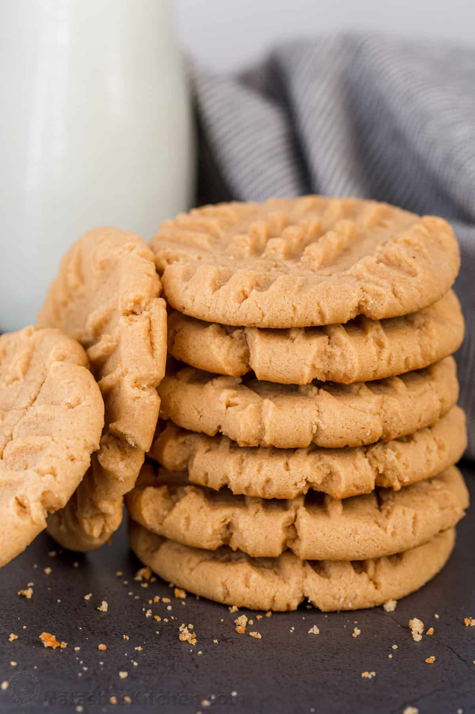

Three Ingredient Peanut Butter Cookies

When you're in the mood for something sweet, but don't feel like pulling out all of your baking supplies, these cookie are the answer! They're quick and easy, and use only three ingredients!
Ingredients
- 1 cup peanut butter
- 1 cup white sugar
- 1 egg
Instructions
- Preheat oven to 350 degrees F (175 degrees C). Line baking sheets with parchment paper.
- Combine the peanut butter, white sugar and egg. Mix until smooth.
- Drop spoonfuls of dough onto the prepared baking sheet. Bake at 350 degrees F (175 degrees C) for 6 to 8 minutes. Do not overbake! These cookies are best when they are still soft and just barely brown on the bottoms.